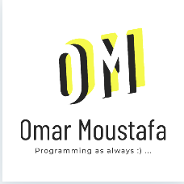

Fax Browser
Fax Browser is a simple web browser built on Python. No extensions, no extra features, only browsing!
Development
Development was first started by Jothin Kumar in 2021.
Together with other volunteers from all around the world
at
Jiusoft, now it has a history and bookmark system; and reload,
back, and forward functions. But don't think that we're
stopping here. We are still planning to add more
features, so stay tuned!
Contributers
Richard Barlian

Orlando Huang

Omar Moustafa
Jothin Kumar
Why you will like Fax
Your data is in your hands
We do not have nor use your data in anyway. Your history and bookmarks are saved in a local file, situated on your computer. Your history and bookmarks are not saved on the internet. The only copy of your history and bookmarks is in your hands, except if a third-party collects that information (like your internet provider).